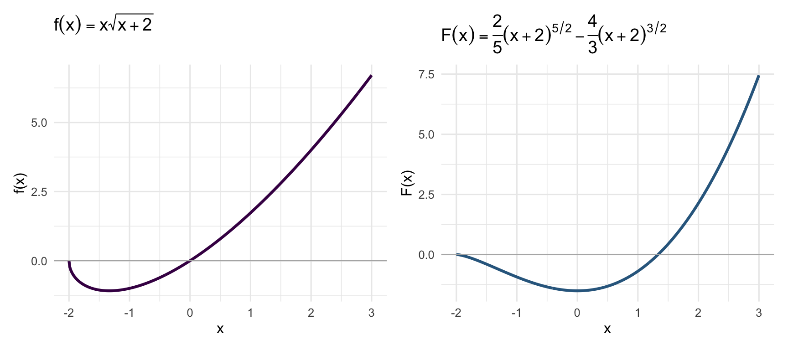

library(ggplot2)
library(patchwork)
x <- seq(-2, 3, length.out = 400)
f <- function(x) ifelse(x >= -2, x * sqrt(x + 2), NA_real_)
F_ <- function(x) ifelse(x >= -2,
(2/5)*(x+2)^(5/2) - (4/3)*(x+2)^(3/2), NA_real_)
df <- data.frame(x = x, fx = f(x), Fx = F_(x))
base_t <- theme_minimal(base_size = 12)
p1 <- ggplot(df, aes(x, fx)) +
geom_line(color = "#440154", linewidth = 1.1, na.rm = TRUE) +
geom_hline(yintercept = 0, color = "gray70", linewidth = 0.4) +
labs(title = expression(f(x) == x*sqrt(x+2)), x = "x", y = "f(x)") +
base_t
p2 <- ggplot(df, aes(x, Fx)) +
geom_line(color = "#31688e", linewidth = 1.1, na.rm = TRUE) +
geom_hline(yintercept = 0, color = "gray70", linewidth = 0.4) +
labs(title = expression(F(x) == frac(2,5)*(x+2)^{5/2} - frac(4,3)*(x+2)^{3/2}),
x = "x", y = "F(x)") +
base_t
p1 + p2